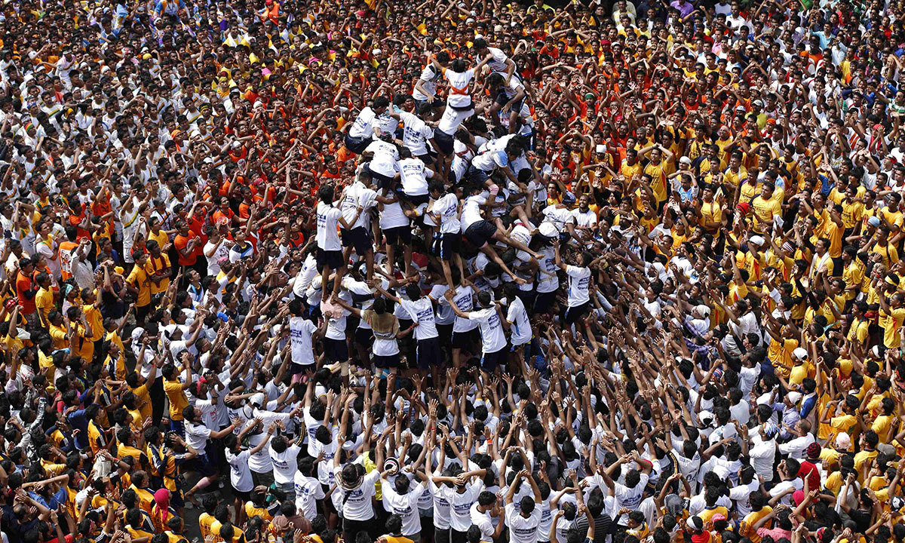

Krishna Janmashtami Festival
Events for Culture and Society Assignment by Klaudia, Imesha and Temi
Events for Culture and Society Assignment by Klaudia, Imesha and Temi

Community is a dynamic group or network of people, who be diverse and have various characteristics, but are united in sharing a common perspective, as well as social and/or geographical aspects, such as identity, values and beliefs, customs and practices and location. Those can be on both smaller, regional and larger, national, scales. Whilst various communities may value and emphasise different qualities, it is widely agreed that cooperation, action and shared interest of the community’s wellbeing are the most important aspects of a community (MacQueen et al, 2017).
Events of various kinds have the power to impact and even shape people’s cultural meaning. They are doing so through festivity, entertainment, education (Clarke and Alan, 2007) and, in case of Krishna Janmashtami, through worship, spirituality and, most importantly, through interpersonal communication and bonding (Krishna Temple, 2023b). As events, such as this festival, hold such social and cultural importance, they also protect the local area where they are being held, including the buildings and local traditions and people. However, each community has different needs and hierarchy of values, and, accordingly, event managers and organisers adapt different strategies for events (Clarke and Alan, 2007).

According to the theory outlining the ‘Communitarian perspective’, people often value authenticity and belonging to the community the most in cultural events. As such, market orientation and adapting to current trends would not be received well, in favour of instead mixing locality with traditions and already established values. This perspective values cultural authenticity and social impact above economic success (Clarke and Alan, 2007). Krishna Janmashtami is an example of an event that adopts such approach and finds success through it. It is clear that economic gain is not a top priority for the festival organisers, ISKCON, instead valuing accessibility and cultural/spiritual experience. This is evident through admission tickets, activities and traditional ceremonial food being free of charge, as well as the affordable bus service, with the only paid features being additional snacks and ceremonial souvenirs. Additionally, the activities and performed rituals are traditional and remain unchanged throughout the years, showing emphasis on providing authenticity rather than catering to a larger audience (Krishna Temple, 2023b). Whilst it is worth mentioning that ISKCON is a non-profit organisation, it is also evident that they cater to the Hindu community’s specific needs and values, with the organisers being essentially part of the community themselves. Therefore, also considering a noticeable emphasis on group celebration and togetherness, the Krishna Janmashtami festival not only gives the community an opportunity to come together and feel connected, but also strengthens and helps maintain those already existing bonds.